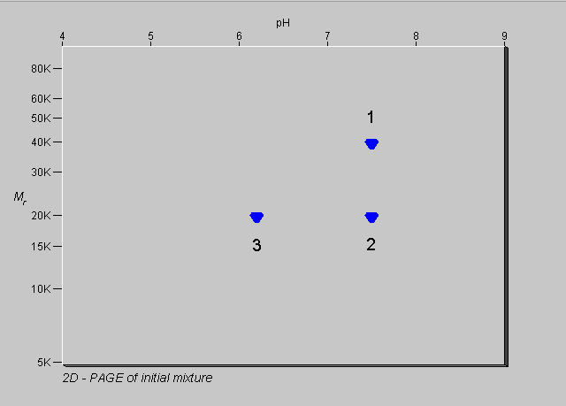
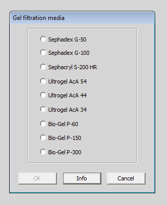
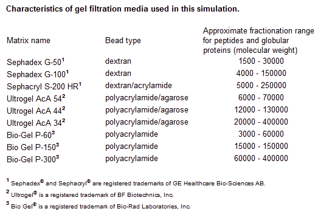
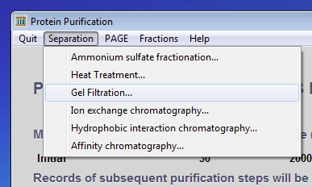

previous exercise
next exercise
previous exercise
next exercise
Exercise 2 of 6
Gel filtration of a simple mixture of three proteins
At this point, you are ready to do some experiments with the protein mixture. At the moment, you have no information about the mixture other than some rather obscure stability data. You can examine a sample of the mixture by two-dimensional polyacrylamide gel electrophoresis
(2D-PAGE). This separates the proteins in the first dimension by isoelectric focusing followed by polyacrylamide gel electrophoresis in SDS in the second dimension. In the first dimension the proteins separate in order of isoelectric point and in the second dimension they separate in order of subunit molecular weight.
Click on the PAGE menu and select 2-Dimensional PAGE. You should get this result:

As you might have expected, there are three spots corresponding to each of the proteins in the mixture. They are numbered in the diagram above. Look at the pattern of spots. Estimate the pI and subunit molecular weight of each protein. Write them down because you will need to refer to them. Note that the size of each spot is the same, indicating that there are equal amounts of each protein in the mixture.
Now click on the PAGE menu and select Hide gel to go back to the main program.

You can now try separating the proteins by gel filtration.
Click on the Separation menu and select
Gel filtration...

The computer will now offer you a selection of gel filtration media. But which one should you choose? Click on the Info button.

The media are representative products from three different suppliers. Look at their fractionation ranges. To get the best separation, you should choose a medium whose range matches as closely as possible the span of molecular weights in your mixture. (Bear in mind that these are native molecular weights, while SDS PAGE gives subunit molecular weights.)

Close the Help browser window and then select the Sephadex G-100 radiobutton and click the OK button.
The computer will then simulate the separation that you would have obtained if you had passed this mixture down a suitably sized column of Sephadex G-100. It has collected fractions and measured the absorbance of each at 280nm. What does this represent?
Look at the elution profile. How many peaks are there? Are they the same size? Look at the subunit molecular weights that you wrote down for each protein. Examine the material in each peak by 2-Dimensional PAGE (use the PAGE menu). Which proteins are in each peak? Can you explain this result?

Try to improve the separation of all three proteins by using a different gel filtration medium.
To do this, click on the Quit menu and select Abandon this step and continue.

Then click on the Separation menu and select
Gel filtration...
Choose a different medium and try again.
Did it work any better? Can you explain this result?
Time to try something different. Ion exchange chromatography.